32 Evolution
Values over time and other ordered variables: lines, time axes, smoothing and uncertainty, many lines, areas and marks for evolution (the R Graph Gallery evolution pages and the data-to-viz caveats).
Dates are java.time values: a datetime scale places LocalDate, LocalDateTime, Instant and the other temporal types; curves and fits work in epoch milliseconds.
(ns use-cases.evolution
(:require [fastmath.core :as m]
[fastmath.kernel :as kernel]
[fastmath.random :as r]
[cljplot2.chart :as chart]
[cljplot2.core :as plot]
[cljplot2.data.levels :as levels]
[notebook-utils :as nu])
(:import [java.time LocalDate]
[java.time.format DateTimeFormatter]))(defn- with-dates
"Rows with the ISO string `:date` parsed to a `LocalDate`."
[rows]
(mapv #(update % :date (fn [d] (LocalDate/parse d))) rows))#'use-cases.evolution/with-dates(def economics (with-dates (nu/dataset :economics)))(def air (with-dates (nu/dataset :air-passengers)))(def chicks (nu/dataset :chick-weight))(def mtcars (nu/dataset :mtcars))(def lincoln
"Lincoln weather with `:date` parsed (`2016-1-1` - not ISO)."
(let [f (DateTimeFormatter/ofPattern "yyyy-M-d")]
(mapv #(update % :date (fn [d] (LocalDate/parse d f))) (nu/dataset :lincoln-weather))))(def economics-long
"Economics in long form - `:variable`, `:value` and `:value01` (the value rescaled to 0..1 per variable), as
ggplot2's `economics_long`."
(vec (for [k [:pce :pop :psavert :uempmed :unemploy]
:let [vs (map k economics) lo (double (reduce min vs)) hi (double (reduce max vs))]
row economics]
{:date (:date row) :variable (name k) :value (k row) :value01 (/ (- (double (k row)) lo) (- hi lo))})))32.1 Lines
A line joins points in x order; dates on x give a datetime axis.
32.1.1 Basic line with dates
Source: R Graph Gallery - Line chart with ggplot2; Time series (1, 2). Data: US economic time series, 1967-2015, R ggplot2 package economics (Federal Reserve Bank of St. Louis, FRED); licence: MIT (ggplot2).
(plot/render-image
{:data economics
:mapping {:x :date :y :unemploy}
:charts [(chart/line)]
:labels {:title "Unemployed persons in the US" :x nil :y "thousands"}}
{:width 800 :height 400})
32.1.2 Line styling
Width, colour and points are chart options; :dash mapped to a variable takes the named dash styles in order (:solid, :dashed, :dotted, …), so lines read apart without colour.
Source: R Graph Gallery - Line chart with ggplot2 (customization). Data: US economic time series, 1967-2015, R ggplot2 package economics (Federal Reserve Bank of St. Louis, FRED); licence: MIT (ggplot2).
(let [recent (filter #(.isAfter ^LocalDate (:date %) (LocalDate/of 2010 1 1)) economics)
recent-long (filter #(and (.isAfter ^LocalDate (:date %) (LocalDate/of 2010 1 1))
(#{"psavert" "uempmed" "unemploy"} (:variable %)))
economics-long)]
(plot/render-image
(plot/arrange
[{:data recent :mapping {:x :date :y :psavert}
:charts [(chart/line {:width 2 :color [215 48 39]}) (chart/scatter {:size 5 :color [215 48 39]})]
:labels {:title "width, colour, points" :x nil :y "savings rate, %"}}
{:data recent-long :mapping {:x :date :y :value01 :dash :variable}
:charts [(chart/line {:width 1.5 :color :black})]
:labels {:title ":dash by variable" :x nil :y "rescaled"}}]
{:columns 2})
{:width 1000 :height 400}))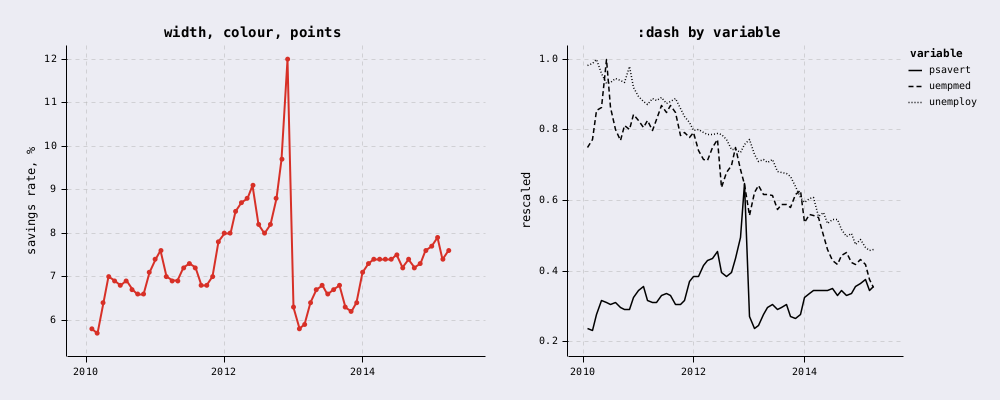
32.1.3 Log scale
Growth at a steady rate is a straight line on a log axis; :sqrt, :pow and :symlog are the other continuous transforms (wadogo scales).
Source: R Graph Gallery - Line plot with log scale. Data: US economic time series, 1967-2015, R ggplot2 package economics (Federal Reserve Bank of St. Louis, FRED); licence: MIT (ggplot2).
(plot/render-image
(plot/arrange
[{:data economics :mapping {:x :date :y :pce} :charts [(chart/line)]
:labels {:title "linear" :x nil :y "consumption, billions USD"}}
{:data economics :mapping {:x :date :y :pce} :scales {:y {:kind :log}} :charts [(chart/line)]
:labels {:title ":log" :x nil :y "consumption, billions USD"}}]
{:columns 2})
{:width 1000 :height 400})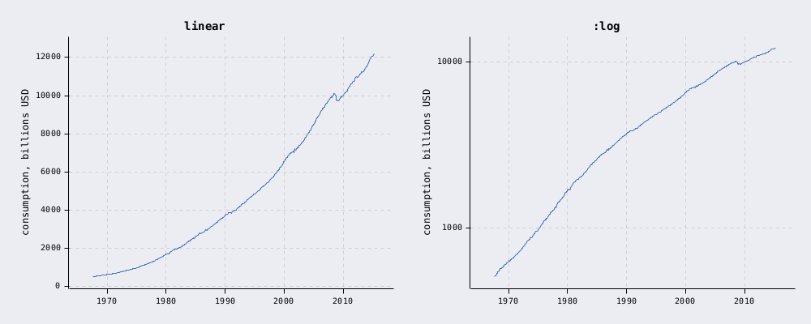
32.1.4 Several groups
One line per level of :color; values on different units are rescaled to 0..1 to share an axis.
Source: R Graph Gallery - Line chart with several groups. Data: US economic time series, 1967-2015, R ggplot2 package economics (Federal Reserve Bank of St. Louis, FRED); licence: MIT (ggplot2).
(plot/render-image
{:data economics-long
:mapping {:x :date :y :value01 :color :variable}
:charts [(chart/line)]
:labels {:title "Five economic series, rescaled" :x nil :y "value (0..1)"}}
{:width 900 :height 450})
32.1.5 Steps and interpolated lines
:interpolator takes any fastmath one-dimensional method: steps, monotone (no overshoot) or cubic curves through the points.
Source: R Graph Gallery - Line plot; data-to-viz - Line plot (1, 2). Data: Monthly airline passengers, 1949-1960, R datasets package AirPassengers (Box & Jenkins 1976); licence: Part of R (GPL-2 | GPL-3).
(let [year (filter #(= 1955 (:year %)) air)
panel (fn [title opts] {:data year :mapping {:x :date :y :passengers}
:charts [(chart/line opts) (chart/scatter {:size 5})]
:labels {:title title :x nil :y "passengers, thousands"}})]
(plot/render-image
(plot/arrange [(panel ":step-after" {:interpolator :step-after})
(panel ":monotone" {:interpolator :monotone})
(panel ":cubic" {:interpolator :cubic})]
{:columns 3})
{:width 1000 :height 350}))
32.1.6 Sampling step
An interpolated line is evaluated every :sample-step pixels (default 1) or at {:count n} positions per run - a coarse count shows the polyline behind a curve.
Source: cljplot2 - line :sample-step. Data: Monthly airline passengers, 1949-1960, R datasets package AirPassengers (Box & Jenkins 1976); licence: Part of R (GPL-2 | GPL-3).
(let [years (filter #(<= 1958 (:year %)) air)
panel (fn [title step] {:data years :mapping {:x :date :y :passengers}
:charts [(chart/line {:interpolator :cubic :sample-step step}) (chart/scatter {:size 4})]
:labels {:title title :x nil :y "passengers, thousands"}})]
(plot/render-image
(plot/arrange [(panel "every pixel (default)" 1) (panel "{:count 12} per run" {:count 12})] {:columns 2})
{:width 1000 :height 380}))
32.1.7 Missing values
A missing (nil) value breaks the line (:gaps :break, default); :gaps :bridge joins the ends with a dimmed segment, so the gap stays visible.
Source: cljplot2 - line :gaps. Data: US economic time series, 1967-2015, R ggplot2 package economics (Federal Reserve Bank of St. Louis, FRED); licence: MIT (ggplot2).
(let [gappy (map (fn [row] (if (<= 1990 (.getYear ^LocalDate (:date row)) 1992) (assoc row :psavert nil) row))
(filter #(<= 1985 (.getYear ^LocalDate (:date %)) 1997) economics))
panel (fn [title gaps] {:data gappy :mapping {:x :date :y :psavert}
:charts [(chart/line {:gaps gaps :width 1.5})]
:labels {:title title :x nil :y "savings rate, %"}})]
(plot/render-image
(plot/arrange [(panel ":gaps :break" :break) (panel ":gaps :bridge" :bridge)] {:columns 2})
{:width 1000 :height 380}))
32.2 Time axes
Datetime ticks fall on calendar units; the formatter is a function or a java.time pattern string.
32.2.1 Date format and breaks
Source: R Graph Gallery - Time series with ggplot2; Manage dates (1, 2). Data: US economic time series, 1967-2015, R ggplot2 package economics (Federal Reserve Bank of St. Louis, FRED); licence: MIT (ggplot2).
(plot/render-image
(plot/arrange
[{:data economics :mapping {:x :date :y :uempmed}
:scales {:x {:ticks-params {:unit :years :step 5} :formatter "yyyy"}}
:charts [(chart/line)] :labels {:title "every 5 years, \"yyyy\"" :x nil :y "weeks"}}
{:data (filter #(= 2008 (.getYear ^LocalDate (:date %))) economics) :mapping {:x :date :y :uempmed}
:scales {:x {:ticks-params {:unit :months :step 2} :formatter "MMM"}}
:charts [(chart/line) (chart/scatter {:size 5})] :labels {:title "2008, every 2 months, \"MMM\"" :x nil :y "weeks"}}]
{:columns 2})
{:width 1000 :height 400})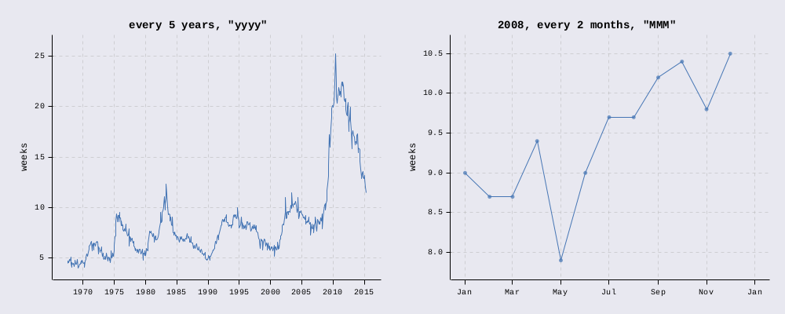
32.2.2 Time window
An explicit :domain of dates shows one window of a long series; the data outside is clipped by the panel.
Source: R Graph Gallery - Time series with ggplot2 (select a time frame). Data: US economic time series, 1967-2015, R ggplot2 package economics (Federal Reserve Bank of St. Louis, FRED); licence: MIT (ggplot2).
(plot/render-image
{:data economics
:mapping {:x :date :y :unemploy}
:scales {:x {:domain [(LocalDate/of 2000 1 1) (LocalDate/of 2010 1 1)]} :y {:domain [4000 16000]}}
:charts [(chart/line {:width 1.5})]
:labels {:title "Unemployment, 2000-2010" :x nil :y "thousands"}}
{:width 800 :height 400})
32.2.3 Annotations
Literal rects, rules and texts take dates as positions: recessions shaded behind the line, a rule and a label.
Source: R Graph Gallery - Line chart annotation. Data: US economic time series, 1967-2015, R ggplot2 package economics (Federal Reserve Bank of St. Louis, FRED); licence: MIT (ggplot2).
(let [d (fn [y mo] (LocalDate/of (int y) (int mo) 1))
recessions [[(d 1969 12) (d 1970 11)] [(d 1973 11) (d 1975 3)] [(d 1980 1) (d 1980 7)] [(d 1981 7) (d 1982 11)]
[(d 1990 7) (d 1991 3)] [(d 2001 3) (d 2001 11)] [(d 2007 12) (d 2009 6)]]]
(plot/render-image
{:data economics
:mapping {:x :date :y :unemploy}
:charts [(chart/rect {:x recessions :fill [0 0 0 35]})
(chart/line {:width 1.5})
(chart/rule {:x (d 2008 9) :dash :dashed :color [215 48 39]})
(chart/text {:x (d 2008 9) :y 14500 :text "Lehman Brothers" :anchor [:right :middle] :offset [-5 0]
:color [215 48 39]})]
:labels {:title "Unemployment and US recessions (NBER)" :x nil :y "thousands"}}
{:width 900 :height 450}))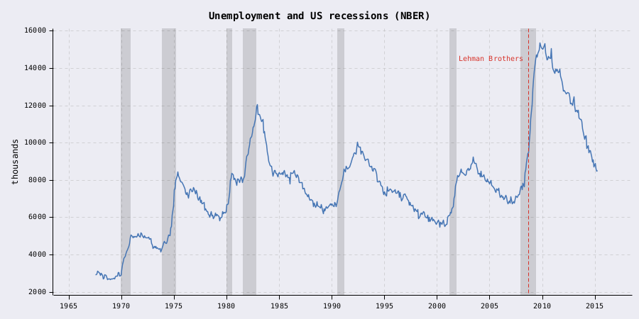
32.2.4 Time heatmap
Year × month as two categorical axes, the value as a linear colour: seasonality and growth at once. A rect whose ends are levels covers the level’s band.
Source: R Graph Gallery - The hourly heatmap. Data: Monthly airline passengers, 1949-1960, R datasets package AirPassengers (Box & Jenkins 1976); licence: Part of R (GPL-2 | GPL-3).
(let [months ["Jan" "Feb" "Mar" "Apr" "May" "Jun" "Jul" "Aug" "Sep" "Oct" "Nov" "Dec"]
rows (map #(assoc % :year-level (str (:year %))) air)]
(plot/render-image
{:data rows
:scales {:x {:domain months} :color {:range :viridis/viridis :title "passengers"}}
:charts [(chart/rect {:mapping {:x0 :month :x1 :month :y0 :year-level :y1 :year-level :color :passengers}
:stroke-color :white})]
:labels {:title "Airline passengers by month (thousands)" :x nil :y nil}}
{:width 800 :height 500}))
32.3 Smoothing and uncertainty
chart/smooth fits a curve per group with a band; chart/ribbon draws any band given as :ymin / :ymax.
32.3.1 Smoothers with confidence bands
Loess (default) with nested 50% / 95% bands; a linear model per diet; a Gaussian process (mean ± z·σ). The loess defaults are ggplot2’s geom_smooth ones - 75% of the points, local quadratic fits - with fastmath’s two robustness iterations (:method-params {:iters 0} is ggplot2’s plain fit; the robust bands are a little wider). The bands of the plain fit (:iters 0) equal R’s predict(se = TRUE); with 144 or 220 points they are narrow. On a date axis the fit works in epoch milliseconds - a kernel’s scale too (here three months).
Source: R Graph Gallery - Scatterplot with ggplot2 (smoothing); Polynomial curve fitting (1, 2). Data: Monthly airline passengers, 1949-1960, R datasets package AirPassengers (Box & Jenkins 1976); licence: Part of R (GPL-2 | GPL-3).
(let [year-ms (* 365.25 86400000.0)]
(plot/render-image
(plot/arrange
[{:data air :mapping {:x :date :y :passengers}
:charts [(chart/scatter {:size 3}) (chart/smooth {:level [0.5 0.95]})]
:labels {:title "loess, 50% / 95%" :x nil :y "passengers"}}
{:data chicks :mapping {:x :time :y :weight :color :diet}
:charts [(chart/scatter {:size 3}) (chart/smooth {:method :lm})]
:labels {:title "lm per diet" :x "days" :y "weight, g"}}
{:data (filter #(<= 1956 (:year %)) air) :mapping {:x :date :y :passengers}
:charts [(chart/smooth {:method :gp :level [0.5 0.95]
:method-params {:kernel (kernel/kernel :gaussian {:sigma (* 0.25 year-ms)})
:noise 0.05 :normalize? true}})
(chart/scatter {:size 4})]
:labels {:title "Gaussian process" :x nil :y "passengers"}}]
{:columns 3})
{:width 1000 :height 380}))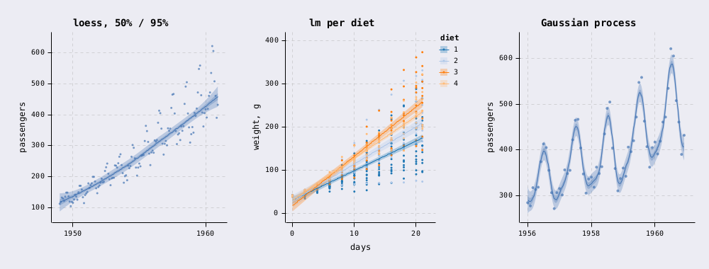
32.3.2 Ribbon
Daily minimum and maximum temperatures as a band, the mean as a line.
Source: R Graph Gallery - Lines with error envelopes. Data: Weather in Lincoln, Nebraska, 2016, R ggridges package lincoln_weather (Weather Underground, via Wilke); licence: GPL-2 (ggridges).
(plot/render-image
{:data lincoln
:mapping {:x :date}
:scales {:x {:formatter "MMM"}}
:charts [(chart/ribbon {:mapping {:ymin :min-temp :ymax :max-temp} :color [215 48 39]})
(chart/line {:mapping {:y :mean-temp} :color [150 30 20]})]
:labels {:title "Lincoln, Nebraska, 2016: daily min-max and mean" :x nil :y "temperature, F"}}
{:width 900 :height 420})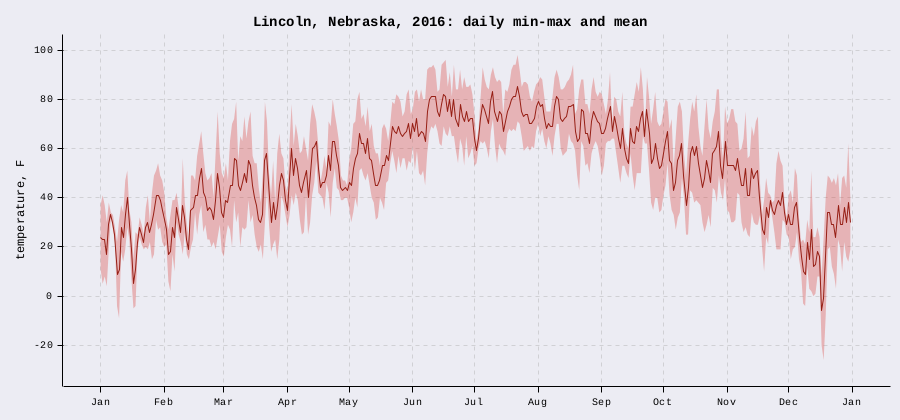
32.4 Many lines
Fifty chicks are a spaghetti plot; highlighting, small multiples and labels make it readable.
32.4.1 Highlighting one line
All lines in grey (:group, no colour), then the one of interest from its own :data in colour.
Source: data-to-viz - Spaghetti plot; R Graph Gallery - Highlight elements in a line chart (1, 2). Data: Weight versus age of chicks on four diets, R datasets package ChickWeight (Crowder & Hand 1990); licence: Part of R (GPL-2 | GPL-3).
(plot/render-image
{:data chicks
:mapping {:x :time :y :weight}
:charts [(chart/line {:mapping {:group :chick} :color [190 190 190]})
(chart/line {:data (filter #(= "21" (:chick %)) chicks) :width 2.5 :color [215 48 39]})
(chart/text {:data (filter #(= "21" (:chick %)) chicks) :mapping {:x :time :y :weight :label :chick}
:select :last :color [215 48 39]})]
:labels {:title "Chick 21 among all fifty" :x "days" :y "weight, g"}}
{:width 800 :height 450})
32.4.2 Small multiples with the others greyed
A chart whose mapping sets the facet key to nil is drawn in every panel: all chicks in grey behind each diet’s own.
Source: R Graph Gallery - Small multiple line chart, all groups greyed out. Data: Weight versus age of chicks on four diets, R datasets package ChickWeight (Crowder & Hand 1990); licence: Part of R (GPL-2 | GPL-3).
(plot/render-image
{:data chicks
:mapping {:x :time :y :weight :group :chick :facet :diet}
:charts [(chart/line {:mapping {:facet nil} :color [175 175 175]})
(chart/line {:color [33 102 172]})]
:labels {:title "Chicks per diet, all chicks in grey" :x "days" :y "weight, g"}}
{:width 900 :height 600})
32.4.3 Labels at line ends
chart/text with :select :last keeps one label per series at its last point and makes room for it.
Source: R Graph Gallery - Line chart with labels at end of lines. Data: US economic time series, 1967-2015, R ggplot2 package economics (Federal Reserve Bank of St. Louis, FRED); licence: MIT (ggplot2).
(let [recent (filter #(and (.isAfter ^LocalDate (:date %) (LocalDate/of 2005 1 1))
(#{"pce" "psavert" "unemploy"} (:variable %)))
economics-long)]
(plot/render-image
{:data recent
:mapping {:x :date :y :value01 :color :variable}
:charts [(chart/line {:width 1.5})
(chart/text {:mapping {:x :date :y :value01 :label :variable :color :variable} :select :last})]
:legend false
:labels {:title "Three economic series since 2005, labelled at the end" :x nil :y "value (0..1)"}}
{:width 900 :height 450}))
32.4.4 Bump chart
Ranks instead of values: levels/rank-rows ranks the chicks at every weighing (1 - the heaviest; ties by data order with :ties :first), a monotone line joins the ranks on a reversed axis.
Source: R Graph Gallery - Basic bump plot. Data: Weight versus age of chicks on four diets, R datasets package ChickWeight (Crowder & Hand 1990); licence: Part of R (GPL-2 | GPL-3).
(let [eight (set (map str (range 1 9)))
ranked (levels/rank-rows (filter #(and (eight (:chick %)) (zero? (mod (:time %) 4))) chicks) :time :weight
{:ties :first})]
(plot/render-image
{:data ranked
:mapping {:x :time :y :rank :color :chick}
:scales {:y {:domain [8.5 0.5] :nice false :ticks (vec (range 1 9))}}
:charts [(chart/line {:interpolator :monotone :width 3})
(chart/scatter {:size 9})
(chart/text {:mapping {:x :time :y :rank :label :chick :color :chick} :select :last})]
:legend false
:labels {:title "Weight rank of chicks 1-8 on diet 1" :x "days" :y "rank"}}
{:width 800 :height 450}))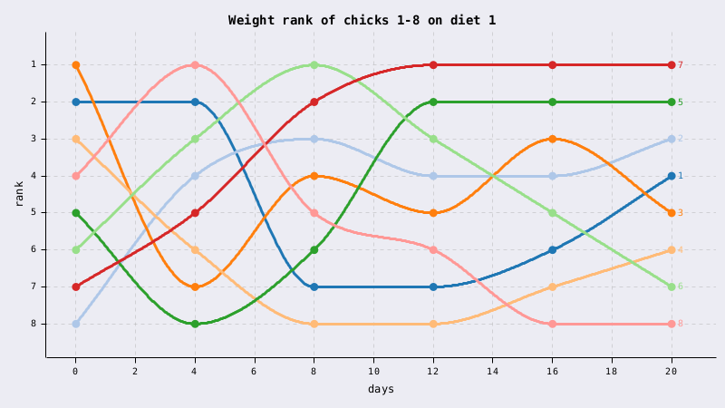
32.5 Areas
An area fills between a line and zero, or between stacked lines.
32.5.1 Area chart
Source: R Graph Gallery - Area chart with ggplot2; data-to-viz - Area chart (1, 2). Data: US economic time series, 1967-2015, R ggplot2 package economics (Federal Reserve Bank of St. Louis, FRED); licence: MIT (ggplot2).
(plot/render-image
{:data economics
:mapping {:x :date :y :psavert}
:charts [(chart/line {:fill :color :alpha 0.4 :width 1.5})]
:labels {:title "Personal savings rate" :x nil :y "%"}}
{:width 800 :height 400})
32.5.2 Gradient area
:fill-gradient colours the area along the y (or x) scale’s range.
Source: R Graph Gallery - Area chart with gradient. Data: US economic time series, 1967-2015, R ggplot2 package economics (Federal Reserve Bank of St. Louis, FRED); licence: MIT (ggplot2).
(plot/render-image
{:data economics
:mapping {:x :date :y :psavert}
:charts [(chart/line {:fill-gradient [[255 255 255 0] [33 102 172 200]] :fill-gradient-axis :y :width 1.5
:color [33 102 172]})]
:labels {:title "Savings rate, gradient along y" :x nil :y "%"}}
{:width 800 :height 400})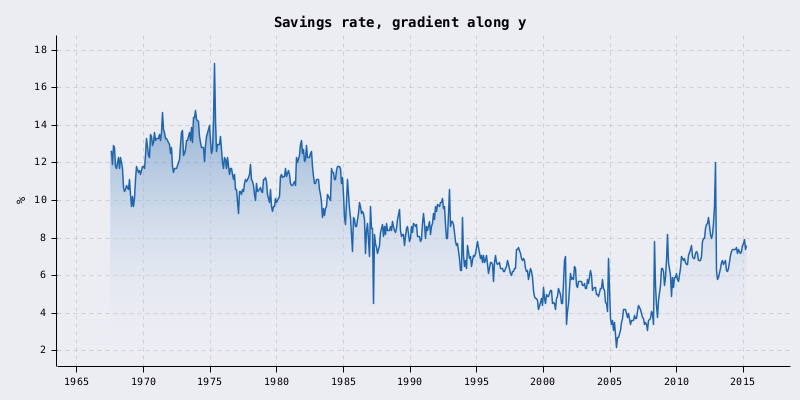
(def diet-means
"Mean chick weight per diet and day."
(vec (for [[[diet time] rows] (sort-by key (group-by (juxt :diet :time) chicks))]
{:diet diet :time time :weight (/ (double (reduce + (map :weight rows))) (count rows))})))32.5.3 Stacked area
:position :stack aligns the groups on the union of their x values and stacks them; every band is filled.
Source: R Graph Gallery - Stacked area chart; data-to-viz - Stacked area (1, 2). Data: Weight versus age of chicks on four diets, R datasets package ChickWeight (Crowder & Hand 1990); licence: Part of R (GPL-2 | GPL-3).
(plot/render-image
{:data diet-means
:mapping {:x :time :y :weight :color :diet}
:charts [(chart/line {:position :stack})]
:labels {:title "Mean chick weight per diet, stacked" :x "days" :y "weight, g"}}
{:width 800 :height 420})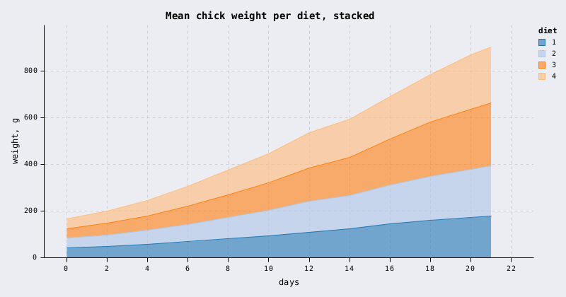
32.5.4 Percent stacked area
Source: R Graph Gallery - Stacked area chart (proportion). Data: Weight versus age of chicks on four diets, R datasets package ChickWeight (Crowder & Hand 1990); licence: Part of R (GPL-2 | GPL-3).
(plot/render-image
{:data diet-means
:mapping {:x :time :y :weight :color :diet}
:charts [(chart/line {:position :normalize})]
:labels {:title "Share of each diet in the summed mean weight" :x "days"}}
{:width 800 :height 420})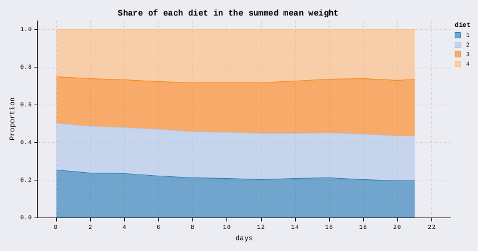
32.5.5 Stacking order
Groups stack in the colour scale’s order: an explicit :domain reorders the bands (and the legend).
Source: data-to-viz - Stacking caveat; R Graph Gallery - Reorder a variable (1, 2). Data: Weight versus age of chicks on four diets, R datasets package ChickWeight (Crowder & Hand 1990); licence: Part of R (GPL-2 | GPL-3).
(plot/render-image
(plot/arrange
[{:data diet-means :mapping {:x :time :y :weight :color :diet}
:charts [(chart/line {:position :stack})] :labels {:title "diets 1, 2, 3, 4" :x "days" :y "weight, g"}}
{:data diet-means :mapping {:x :time :y :weight :color :diet} :scales {:color {:domain ["3" "4" "2" "1"]}}
:charts [(chart/line {:position :stack})] :labels {:title "diets 3, 4, 2, 1" :x "days" :y "weight, g"}}]
{:columns 2})
{:width 1000 :height 400})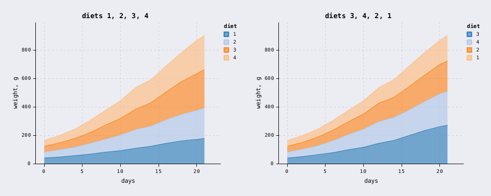
32.5.6 Streamgraph
Stacked around a moving baseline: :silhouette (symmetric around zero) and :wiggle (least slope); an :interpolator smooths the bands.
Source: R Graph Gallery - Streamgraph; data-to-viz - Streamgraph (1, 2). Data: Weight versus age of chicks on four diets, R datasets package ChickWeight (Crowder & Hand 1990); licence: Part of R (GPL-2 | GPL-3).
(plot/render-image
(plot/arrange
[{:data diet-means :mapping {:x :time :y :weight :color :diet}
:charts [(chart/line {:position :silhouette :interpolator :monotone})]
:labels {:title ":silhouette" :x "days" :y nil}}
{:data diet-means :mapping {:x :time :y :weight :color :diet}
:charts [(chart/line {:position :wiggle :interpolator :monotone})]
:labels {:title ":wiggle" :x "days" :y nil}}]
{:columns 2})
{:width 1000 :height 400})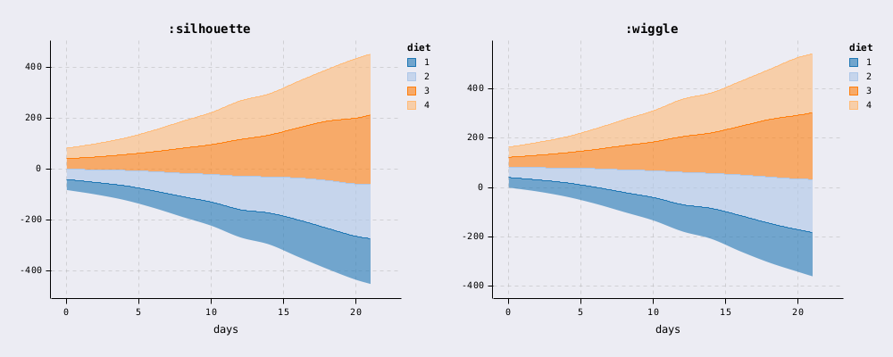
32.6 Other marks
Segments, candlesticks, colour along a line and paths through time.
32.6.1 Lollipop
A segment from zero to each value ((chart/segment {:yend 0})) under a point, on any x: car models (flipped for readable labels) or dates.
Source: R Graph Gallery - Basic lollipop plot; data-to-viz - Lollipop (1, 2). Data: Motor Trend car road tests (1974), R datasets package mtcars (Henderson & Velleman 1981); licence: Part of R (GPL-2 | GPL-3).
(let [ordered (sort-by :mpg mtcars)]
(plot/render-image
(plot/arrange
[{:data ordered
:mapping {:x :model :y :mpg}
:scales {:x {:domain (mapv :model ordered)}}
:flip true
:charts [(chart/segment {:yend 0 :color [150 150 150]}) (chart/scatter {:size 7 :color [33 102 172]})]
:labels {:title "Fuel economy of 32 cars" :x nil :y "miles per gallon"}}
{:data (filter #(= 1959 (:year %)) air)
:mapping {:x :date :y :passengers}
:charts [(chart/segment {:yend 0 :color [150 150 150]}) (chart/scatter {:size 7 :color [33 102 172]})]
:labels {:title "Passengers in 1959" :x nil :y "thousands"}}]
{:columns 2})
{:width 1000 :height 700}))
32.6.2 Candlestick
Open-high-low-close per day: the wick from low to high, the body from open to close, green up and red down; OHLC bars as the alternative. The prices are a seeded random walk.
Source: Wikipedia - Candlestick chart.
(def prices
"Daily open / high / low / close of a random walk over 40 trading days."
(let [rng (r/rng :mersenne 21)
start (LocalDate/of 2024 3 1)]
(vec (map-indexed (fn [i close]
(let [open (+ close (* 1.2 (r/grandom rng)))
spread (m/abs (* 0.8 (double (r/grandom rng))))]
{:date (.plusDays start i) :open open :close close
:high (+ (max open close) spread) :low (- (min open close) spread)}))
(take 40 (reductions + 50.0 (repeatedly #(r/grandom rng))))))))(plot/render-image
(plot/arrange
[{:data prices :mapping {:x :date :open :open :high :high :low :low :close :close}
:charts [(chart/candlestick)] :labels {:title "candlestick" :x nil :y "price"}}
{:data prices :mapping {:x :date :open :open :high :high :low :low :close :close}
:charts [(chart/candlestick {:style :ohlc})] :labels {:title ":style :ohlc" :x nil :y "price"}}]
{:columns 2})
{:width 1000 :height 400})
32.6.3 Line coloured by its value
A linear :color colours the line along its length; binned, it shows ranges (see also the Colors chapter).
Source: R Graph Gallery - Line plot colour following y value. Data: Weather in Lincoln, Nebraska, 2016, R ggridges package lincoln_weather (Weather Underground, via Wilke); licence: GPL-2 (ggridges).
(plot/render-image
(plot/arrange
[{:data lincoln :mapping {:x :date :y :mean-temp :color :mean-temp} :scales {:color {:range :RColorBrewer/RdYlBu :reverse true :title "F"}}
:charts [(chart/line {:width 2})] :labels {:title "linear" :x nil :y "mean temperature, F"}}
{:data lincoln :mapping {:x :date :y :mean-temp :color :mean-temp}
:scales {:color {:range :RColorBrewer/RdYlBu :kind :binned :reverse true :bins [20 40 60 80] :title "F"}}
:charts [(chart/line {:width 2})] :labels {:title "binned" :x nil :y "mean temperature, F"}}]
{:columns 2})
{:width 1000 :height 400})
32.6.4 Connected scatter
Two variables against each other, joined in time order (:sort false); :curve :bezier passes a smooth path through the points, labels mark some years.
Source: R Graph Gallery - Connected scatterplot with ggplot2; data-to-viz - Connected scatter (1, 2). Data: US economic time series, 1967-2015, R ggplot2 package economics (Federal Reserve Bank of St. Louis, FRED); licence: MIT (ggplot2).
(let [yearly (vec (for [[year rows] (sort-by key (group-by #(.getYear ^LocalDate (:date %)) economics))
:when (<= 2000 year 2014)]
{:year year
:uempmed (/ (double (reduce + (map :uempmed rows))) (count rows))
:psavert (/ (double (reduce + (map :psavert rows))) (count rows))}))]
(plot/render-image
{:data yearly
:mapping {:x :uempmed :y :psavert}
:charts [(chart/line {:sort false :curve :bezier :color [33 102 172]})
(chart/scatter {:size 6 :color [33 102 172]})
(chart/text {:data (filter #(#{2000 2003 2006 2009 2012 2014} (:year %)) yearly) :mapping {:x :uempmed :y :psavert :label :year}
:anchor [:left :bottom] :offset [4 4]})]
:labels {:title "Unemployment duration vs savings rate, 2000-2014" :x "median unemployment, weeks" :y "savings rate, %"}}
{:width 800 :height 550}))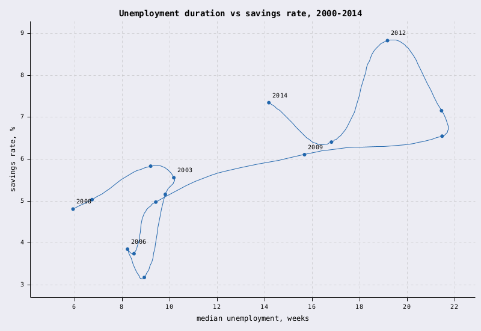
32.7 Functions
chart/function samples functions across the panel. Several functions - a vector, [label f] pairs or a map - are one group each: {:mapping {:color :function}} colours them and gives the legend, labels in the given order. :y-limits keeps asymptotes from flattening the curve (segments across a limit are cut).
32.7.1 Many functions with a legend
Source: cljplot2 - chart/function.
(plot/render-image
(plot/arrange
[{:charts [(chart/function {:f (mapv (fn [k] [(str "sin " k "x") (fn [x] (m/sin (* k (double x))))]) (range 1 11))
:domain [0 m/PI] :mapping {:color :function}})]
:scales {:color {:title nil}}
:labels {:title "ten [label f] pairs" :x "x" :y "y"}}
{:charts [(chart/function {:f m/tan :domain [(- m/PI) m/PI] :y-limits [-5 5]})]
:labels {:title "tan with :y-limits [-5 5]" :x "x" :y "y"}}]
{:columns 2})
{:width 1000 :height 400})
32.7.2 Parametric curves
:parametric - (fn [t] [x y]) over :t [lo hi], sampled by count; Lissajous figures on an isometric aspect.
Source: Wikipedia - Lissajous curve.
(plot/render-image
(plot/arrange
(vec (for [[a b] [[1 2] [3 2] [3 4] [5 4]]]
{:aspect :iso
:charts [(chart/function {:parametric (fn [t] [(m/sin (* a (double t))) (m/sin (* b (double t)))])
:t [0 m/TWO_PI] :sample-step {:count 1000}})]
:labels {:title (str "a = " a ", b = " b) :x nil :y nil}}))
{:columns 4})
{:width 1000 :height 300})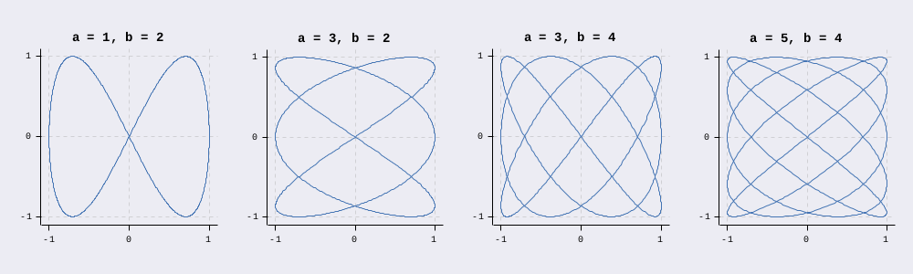
32.8 Caveats
32.8.1 Cutting the y axis; aspect ratio
Starting y at zero shows changes against the whole; a cut axis magnifies them. A wide panel flattens slopes, a narrow one steepens them - the same data.
Source: data-to-viz - Cut y axis; Aspect ratio (1, 2). Data: US economic time series, 1967-2015, R ggplot2 package economics (Federal Reserve Bank of St. Louis, FRED); licence: MIT (ggplot2).
(let [recent (filter #(.isAfter ^LocalDate (:date %) (LocalDate/of 2012 1 1)) economics)
plot-of (fn [title y] {:data recent :mapping {:x :date :y :pop} :scales {:y y}
:charts [(chart/line {:width 1.5})] :labels {:title title :x nil :y "population, thousands"}})]
(plot/render-image
(plot/arrange [(plot/arrange [(plot-of "y from 0" {:domain [0 330000]}) (plot-of "y cut" {})] {:columns 2})
(plot/arrange [(plot-of "wide" {}) (plot-of "narrow" {})] {:columns 2 :widths [4 1]})]
{:columns 1})
{:width 1000 :height 700}))
source: notebooks/use_cases/evolution.clj